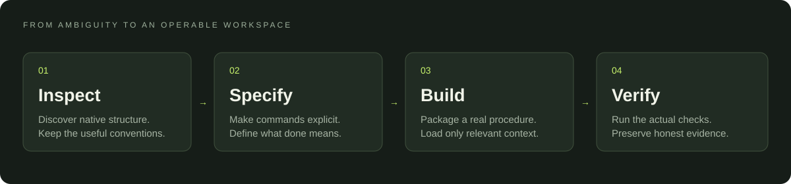

Structure that fits.
Describe native modules and commands. Your Rust crate, Python package, or monorepo keeps its own shape.
PRESERVE THE CODEBASEOPEN SOURCE / V1.0
Good agents need more than a prompt. Give them a clear map, precise tools, and a way to prove the work is done.
01 / THE SYSTEM
Keep your language’s conventions. Add the missing interface between an agent’s intent and the project’s actual behavior.
Describe native modules and commands. Your Rust crate, Python package, or monorepo keeps its own shape.
PRESERVE THE CODEBASEA focused entry point routes to the procedure you need. Detailed references load when they are relevant.
KEEP DISCOVERY CHEAPValidate the contract, run real checks, and report gaps. Structural validity never stands in for working software.
MAKE RESULTS OBSERVABLE02 / THE WORKFLOW
Inspect. Specify. Build. Verify. Each step has a concrete interface and an honest stopping condition.
$ foundry.py inspect --root ./project
{
"status": "completed",
"data": {
"native_manifests": [
{ "path": "Cargo.toml", "ecosystem": "rust" }
],
"truncated": false,
"instructions_present": true
}
}Abbreviated examples for readability. Run the CLI for complete JSON results.

03 / GET STARTED
Clone the source, inspect it, then install a fresh copy. No API key. No package downloads. Your existing skills stay intact.
Read the complete installation guidegit clone https://github.com/AleksanderAmid/agent-foundry.git
cd agent-foundry
python skills/agent-foundry/scripts/foundry.py install --host codex --applyUse $agent-foundry to inspect this repository.Installs into your Codex skills directory. Available on your next turn; refresh the session if needed.
RESEARCH → IMPLEMENTATION
Built from deep research into repository organization and agent skills. Focused tooling and explicit limits make the framework practical to test, adapt, and improve.
Explore the research decisions Software checks validate the helpers. They do not prove a universal gain in model performance.Better foundations.
Room to build.